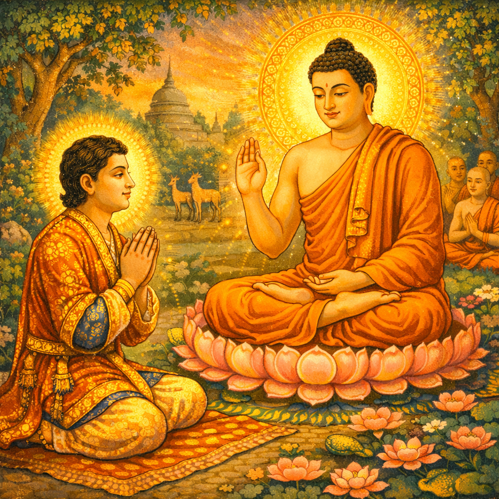

Namo tassa bhagavato arahato sammāsambuddhassa
Почтение Самому Почитаемому, Архату, Самостоятельно Пробудившемуся
Namo tassa bhagavato arahato sammāsambuddhassa
Почтение Самому Почитаемому, Архату, Самостоятельно Пробудившемуся
Namo tassa bhagavato arahato sammāsambuddhassa
Почтение Самому Почитаемому, Архату, Самостоятельно Пробудившемуся
Sabbapāpassa akaraṇaṃ,
Никакого зла не делать
Kusalassa upasampadā;
Благое накапливать
Sacitta pariyo dapanaṃ,
Свой ум, к постижению побуждать
Etaṃ buddhāna sāsanaṃ
Это Будды учение.
Когда Будда поселился в Оленьем парке в Isipatana около Bārāṇasī на сезон дождей (vassāvāsa), он преподал Сутту о повороте колеса Дхаммы (Dhamma-cakkappavattana-sutta, SN 56.11) и Сутту о характеристиках не-я (Anatta-lakkhaṇa-sutta, SN 22.59) группе пяти монахов (pañca-vaggiya); а также Сутту к Налаке (Nālaka-sutta, Snp 3.11) достопочтенному Налаке, что привело их всех к освобождению.
В Bārāṇasī жил некий молодой человек, по имени Яса из знатного рода, он был сыном Суджаты из Senānigama, которая, однажды поднесла густой молочный рис Бодхисатте. Суджата, была женой богатого торговца из Bārāṇasī.
Сын богатого торговца, Яса, владел
тремя дворцами: один дворец для зимы, другой
для лета и третий для сезона дождей. Поскольку
в то время, когда Будда находился в Оленьем
парке, был сезон дождей, Яса проживал во
дворце, подходящем для этого периода.
В течение всех четырёх месяцев сезона
дождей его окружали танцовщицы, искусные
в музыке, танцах и пении. Во всём дворце
не было ни одного мужчины. И Яса предавался
чрезвычайно роскошным чувственным удовольствиям,
всё это время, даже не спускаясь вниз и
не покидая дворец.
Однажды, когда он
так наслаждался роскошью чувственных
удовольствий среди женщин, игравших
на пяти видах музыкальных инструментов,
певших и танцевавших, Яса заснул. Поскольку
не было необходимости развлекать его
во время сна, танцовщицы тоже заснули,
некоторые обнимая свои инструменты,
другие используя их как подушки. Внутреннее
пространство главного зала было ярко
освещено светом масляных ламп, которые
горели всю ночь.
Когда Яса проснулся раньше других, он увидел своих танцовщиц, крепко спящих самым отвратительным образом, словно на кладбище: некоторые обнимали арфы, некоторые обнимали барабаны, у некоторых были растрёпаны волосы, у некоторых изо рта текла слюна, а остальные что-то бормотали во сне. При виде этого, понимание опасной природы (ādīnava) чувственных удовольствий (kāma-guṇa) возникло в его уме. Так он почувствовал отвращение к таким удовольствиям.
Затем, будучи глубоко охваченным
чувством духовной неотложности (saṁvega), он произнёс про себя возвышенное
изречение (udāna):
Upaddutaṁ vata bho! Upassatthaṁ vata bho!
О, как всё угнетено! О, как всё измучено!
"Все виды загрязнений (kilesa) причиняют
боль и угнетают это жалкое тело, это большой
источник страдания (dukkha) для всех, включая
меня самого. Все виды загрязнений мучают
и угнетают это жалкое тело, это большой
источник страдания для всех, включая
меня самого!"
Яса, утомлённый своим опытом с объектами чувственных удовольствий, встал со своего ложа, никому не сообщив, надел свою золотую обувь и покинул свой дворец. Достигнув двери, он легко вышел, так как дэвы заранее открыли дверь, думая: "Пусть никто и ничто не препятствует пути Ясы к отречению". Таким же образом дэвы-хранители города держали городские ворота открытыми, так что Яса смог легко покинуть город без каких-либо проблем или препятствий и продолжить свой путь, в конце концов рано утром он прибыл в Олений парк около Bārāṇasī. Яса, сошёл с дороги и приближаясь к Будде издалека, произнёс те же самые слова неотложного и возвышенного изречения (saṁvega-udāna), которые он произнёс ранее.
Тогда Будда обратился к нему со словами приветствия и далее сказал: "Яса, эта Дхамма, касающаяся Nibbāna, которую я уже знаю, это Дхамма, которая не мучима и не угнетаема никакими загрязнениями (kilesa). Яса, подойди! Садись здесь. Я научу тебя Благой Дхамме, ведущей к Nibbāna". Тогда Яса обрадовался и возликовал: "Почтенный реализовал эту Дхамму, эта Дхамма, свободная от мучений и угнетения любыми загрязнениями (kilesa)". Поэтому, сняв с ног свою золотую обувь, он почтительно приблизился к Будде, совершил поклон и сел на подобающее место.
После этого Будда обучил Ясу практикам нравственности, ведущим к путям и плодам:
1) Дхамме, относящейся к щедрости (dāna-kathā);
2) Дхамме, относящейся к нравственности (sīla-kathā);
3) Дхамме, относящейся к счастливому перерождению, такие как высшие миры (sagga-kathā);
4) Дхамме, относящейся к благому пути и практики для реализации путей, плодов и Nibbāna (magga-kathā).
1. Дхамма о щедрости (dāna-kathā): Благое деяние щедрости является причиной счастья в нынешнем существовании, в следующем существовании и блаженства Nibbāna. Это первичная причина всех видов удовольствий дэвов и людей. Это также источник материальных объектов чувственных удовольствий (ārammaṇa-vatthu) и благополучия, возникающего от использования этих объектов. Для существ, подверженных опасности несчастий, это также хороший защитник, место безопасности, прибежище и укрытие. Как в нынешнем существовании, так и в следующем, щедрость, это то, на что можно опереться, на чем можно стоять, за что можно держаться, как за хорошего защитника, место безопасности, прибежище и укрытие. Воистину, это деяние щедрости подобно украшенному драгоценностями львиному трону, ибо на него можно опереться; подобно великой земле, ибо на ней можно стоять; подобно веревке для слепого, за которую можно держаться как за опору.
Это благое деяние щедрости подобно кораблю для пересечения плохой участи низших миров (apāya-bhūmi-duggati). Оно подобно доблестному военачальнику на поле битвы, поскольку может отразить или облегчить опасность от таких врагов, как жадность (lobha) и скупость (macchariya), и т.д. Оно подобно хорошо охраняемому городу, поскольку может защитить от опасности бедности. Оно подобно цветку лотоса (paduma), поскольку не запятнано грязью неблагого (akusala), такого как зависть и скупость. Оно подобно огню, поскольку может сжечь мусор неблагого, такой, как зависть и скупость. Оно подобно ядовитой змее, поскольку к нему трудно приблизиться неблагим состояниям.
Оно подобно царю львов, поскольку может освободить от страха, и дарующему не нужно бояться никакого врага в нынешнем существовании, и тем более в следующем. Обладая огромной силой, она подобно большому слону, и дарующий благословлен хорошими друзьями и спутниками в нынешнем существовании. Он также тот, кто будет обладать большой физической и умственной силой в следующем существовании. Щедрость, подобна чисто белому быку (usabha), поскольку мудрые люди считают её благоприятным знаком, предвещающим исключительное и особое процветание как здесь, так и в будущем, она также подобно царю небесных кентавров (valāhaka-sindhava), поскольку может перенести с дурной земли четырех несчастий (vipatti) на свободную от опасностей благую землю четырех удач (sampatti).
Далее Будда говорит:
"Эта щедрость также является благим и истинным путем, по которому я шел. Это также то, с чем я был связан. Я совершал великие деяния щедрости, такие как деяния Velāma, Mahā Govinda, Mahā Sudassana и Vessantara, когда я практиковал и совершенствовал pāramī. В моем существовании как добродетельного зайца я полностью завоевал сердце получателя, отдав в щедрости свое собственное тело в пылающем костре".
Здесь Сакка, Владыка дэвов, в облике просящего подаяние брахмана, непрерывно держал в уме смелость, проявленную мудрым зайцем, Бодхисаттой, в его совершении акта щедрости без какого-либо отвлечения. Поэтому слова Будды: "Я полностью завоевал сердце получателя" - это риторический способ косвенного выражения (vaṅka-vutti), вежливо подразумевающий созерцание Саккой смелости бодхисатты в щедрости. Здесь, посредством слов: "Отдав в щедрости свое собственное тело", Будда дал наставление таким образом: "Бодхисатты, слишком хорошо зная о заслуге щедрости, даже отдавали свои жизни в щедрости. Учитывая это, должны ли мудрые иметь привязанность к внешнему объекту (bāhira-vatthu)? Конечно, они не должны".
"Более того, заслуга от щедрости (dāna) способна принести роскошь Сакки, Мары, Брахмы и Вселенского Монарха (Cakka-vatti) в мирском мире. Она также способна принести Пробужденное знание (Bodhi-ñāṇa) ученика (sāvaka), Паччекабудды и Самасамбудды".
Таким образом, Будда обучил сына богатого купца, Ясу, Дхамме о щедрости (dāna).
Поскольку только те, кто щедр, могут соблюдать нравственность, Будда преподал учение о нравственности (sīla-kathā) сразу после беседы о щедрости (dāna-kathā). Щедрость - это отдача чего-то, что принадлежит себе, для блага получателей или, чтобы почтить их. Поскольку это так, тот, кто практикует щедрость, является благородной личностью, которая действительно желает блага существам, и не может быть никакой причины для того, чтобы убивать другого или красть чужое имущество в этом акте щедрости. И поэтому, поскольку только тот, кто практикует щедрость, может на самом деле соблюдать нравственность, учение Будды о нравственности непосредственно следует за беседой о щедрости.
2. Слова Будды о нравственности (sīla-kathā): "Благое деяние нравственности существует для того, чтобы существа опирались на него, твердо стояли на нём, держались за него, были хорошо защищены им, укрыты им, приближались к нему и находили в нём как в прибежище. Это благое деяние нравственности (sīla) - то, о чём я заботился. Я соблюдал и охранял его без каких-либо нарушений и перерывов в безгранично-большом количестве существований, таких как существование Царём нагов Санкхапале (Saṅkhapāla-jātaka, Ja 524), Царём нагов Бхуридатте (Bhūridatta-jātaka, Ja 543), царём нагов Чампейе (Campeyya-jātaka, Ja 506), царём Силаве (Mahāsīlava-jātaka, Ja 51), Царём слонов Матупосаке (Mātuposaka-jātaka, Ja 455), Царем слонов Чадданте (Chaddanta-jātaka, Ja 514) и других".
Воистину, для блага в этом настоящем существовании и в следующем, нет ничего подобного нравственности, на что можно опереться, на чём можно стоять, за что можно держаться, чем можно быть защищённым, укрытым и в чём можно найти прибежище. Нет украшения подобного украшению нравственности, нет цветка подобного цветку нравственности, и нет аромата подобного аромату нравственности. Более того, все люди, вместе с Дэвами, никогда не устают видеть того, кто украшен цветами нравственности.
Таким образом, Будда обучил сына богатого купца, Ясу, Дхамме о нравственности (sīla).
Чтобы показать, что счастье в обители Дэвов является результатом благих деяний нравственности, Будда преподал Дхамму о небесах (sagga-kathā) сразу после беседы о нравственности (sīla-kathā).
3. Слова Будды о небесных мирах (sagga-kathā): Обители дэвов желанны для каждого. Они воодушевляют и радуют всех. В обителях дэвов можно испытывать непрерывно радость и блаженство. Дэвы Cātumahārājika наслаждаются божественным блаженством в течение девяти миллионов лет по человеческим меркам, а дэвы Tāvatiṁsa наслаждаются им в течение тридцати шести миллионов лет.
Таким образом Будда преподал Ясе, Дхамму о блаженстве небесных миров. В действительности, божественное блаженство настолько велико, что даже Будды не могли полностью описать его во всей полноте.
4. После обучения блаженству божественных обителей, Будда сразу же преподал дхамму о благородном пути (ariya-magga), чтобы показать, что даже небесное блаженство постоянно угнетается загрязнениями (kilesa), такими как страсть (rāga), и чтобы показать, что поскольку благородный путь (ariya-magga) полностью свободен от загрязнений (kilesa), он не может быть ими угнетён. Поэтому для обучения благородному пути Будда сначала преподал дхамму, описывающую недостатки чувственных удовольствий (kāmānaṁ ādīnava-kathā) вместе с дхаммой, описывающей преимущества отречения (nekkhamme ānisaṁsa-kathā), начиная с монашества, которое ведёт к освобождению от чувственности (kāma-guṇa) и заканчивая Nibbāna, поскольку как недостатки чувственных удовольствий, так и преимущества отречения формируют средства реализации путей (magga).
Будда, заинтересовав Ясу дхаммой о божественном блаженстве, наставляя его подобно тому, как человек укрощает большого слона, чтобы сделать его послушным, а затем внезапно отсекает его бивни, говоря следующее:
"Это блаженство обителей дэвов также имеет природу непостоянства (anicca). Оно имеет природу нестабильности (addhuva). Не следует иметь желания и привязанности к такому блаженству. Материальные объекты чувственного удовольствия, в действительности, приносят больше страдания, чем удовольствия. Эти материальные объекты чувственного удовольствия содержат удовольствие размером с маленькое семя, но они полны недостатков, подобных по размеру горе Меру".
Как уже было осмыслено и реализовано им во время его отречения от мира, Будда подробно разъяснил недостатки чувственного удовольствия, которого придерживаются неблагородные люди, но избегают благородные, и то, как существа угнетаются и становятся несчастными из-за чувственного удовольствия.
И затем, поскольку в чувственном удовольствии было множество недостатков, Будда также подробно разъяснил достоинства отсутствия недостатков и малость страдания в отречении (nekkhamma), начиная с монашества и заканчивая Nibbāna.
Преподав Дхамму о щедрости и других добродетелях, Будда увидел, что ум Ясы стал устойчивым, податливым, мягким, свободным от помех, воодушевлённым, радостным и прозрачным, поэтому он преподал ему особую дхамму (sāmukkaṁsikā Dhamma) о Четырёх Истинах: Истине страдания (dukkha-sacca), Истине происхождения страдания (samudaya-sacca), Истине прекращения страдания (nirodha-sacca) и Истине пути, ведущего к прекращению страдания (magga-sacca).
Это означает, что после того, как Будда преподал Ясе учения последовательно, начиная со щедрости, и поток ума Ясы освободился от таких умственных изъянов, как недостаток веры, лень и апатия, тревожность, беспокойство и сомнение, он оказался в состоянии ума, восприимчивом к глубокой дхамме Четырёх Истин. Будучи свободным от загрязнений воззрений (diṭṭhi), самомнения (māna) и прочего, его ум стал мягким и податливым, как чистое золото. Он был свободен от пяти помех. Он сопровождался великой радостью и восторгом (pīti-pāmojja) на превосходном Пути к Nibbāna. Будучи наделённым верой (saddhā), его ум был очень ясным. Только тогда Будда преподал ему глубокую дхамму Четырёх Истин о страдании, возникновении, прекращении и пути методом, используемым только Буддами в соответствии с желаниями и склонностями существ, что позволило ему реализовать пути и плоды.
Когда его так обучили, приведём мирской пример: как ткань, выстиранная и тщательно очищенная от грязи, хорошо впитывает краску в жёлтый, красный и другие цвета и становится яркой, так и понимание Дхаммы (Dhamma-cakkhu-vijjā), которое является проникающим знанием вступления в поток (Sotāpatti-magga), мгновенно и ясно возникло в потоке ума Ясы, поскольку он сейчас обратил внимание на истину прекращения (nirodha-sacca), Nibbāna, и искоренил пыль загрязнений, таких как страсть (rāga) и прочие; поскольку он полностью устранил загрязнение воззрений (diṭṭhi), сомнения (vicikicchā) и загрязнения (kilesa), ведущие к состояниям страдания; поскольку он понял с сильным убеждением, которое не могло быть опровергнуто другими, что все обусловленные вещи подвержены разрушению и исчезновению, и потому что он был наделён быстрым проникающим знанием (vipassanā-ñāṇa), острым интеллектом, лёгкой практикой и способностью к быстрой реализации (sukha-paṭipadā-khippabhiññā). Всё это означает, что Яса утвердился как вступивший в поток (Sotāpanna).
Суджата, мать Ясы и жена богатого купца, встала рано утром и пошла в особняк Ясы, осмотревшись вокруг, и не увидев своего сына, она встревожилась и сообщила отцу Ясы: "Господин, я не могу найти вашего сына Ясу!" После этого его отец спешно отправил искусных всадников в четырех направлениях, а сам отправился в направлении Оленьего парка Исипатана, и, найдя по пути следы золотых сандалий, которые носил его сын, он последовал по этим следам.
Будда увидел отца Ясы издалека и, подумав: "Было бы хорошо скрыть Ясу моей сверхъестественной силой, чтобы отец не мог его видеть", он сделал Ясу невидимым для его отца.
Купец подошел к Будде и обратился к нему: "Благословенный Будда, не видели ли вы молодого человека благородной семьи по имени Яса?" На это Будда ответил: "Уважаемый, если вы хотите увидеть своего сына, просто сядьте здесь. Даже сидя здесь, вы сможете увидеть своего сына, сидящего рядом". После этого купец обрадовался мысли: "Я увижу моего сына Ясу, сидящего рядом, даже пока я сижу здесь!" Выразив почтение Будде с должным уважением и преданностью, он сел в подобающем месте.
Когда он так сидел, Будда последовательно
учил его так же, как было сказано ранее:
1) Дхамме, относящейся к щедрости (dāna-kathā);
2) Дхамме, относящейся к нравственности (sīla-kathā);
3) Дхамме, относящейся к небесным мирам (sagga-kathā); и
4) Дхамме, относящейся к благому пути и практики для реализации путей, плодов и Nibbāna (magga-kathā). Когда Будда увидел, что ум купца стал податливым, мягким, свободным от помех, воодушевленным, радостным и прозрачным, он преподал Дхамму Четырех Истин, изначально открытую им, и богатый купец стал вступившим в поток (Sotāpanna).
Затем отец Ясы обратился к Будде так: "Как восхитительно это, возвышенный Будда! Как восхитительно это, возвышенный Будда! Как если бы то, что было перевернуто вниз, было повернуто вверх, так говорится в мирском сравнении, как если бы то, что было скрыто, было раскрыто, как если бы человеку, потерявшему путь, указали правильное направление; как если бы в темноте зажгли светильник с мыслью: 'Те, у кого есть глаза, могут видеть различные формы вещей', так Будда ясно преподал мне Дхамму различными способами. Благославенный Будда, я признаю и принимаю прибежище в Будде, Дхамме и Сангхе. Да примете вы, Благославенный Будда, меня как мирского последователя с тройным прибежищем отныне и до конца моей жизни"! После этого он принял сверхмирское прибежище.
Отец Ясы, богатый человек, стал первым мирянином, достигшим уровня вступившего в поток (Sotāpanna), благородным учеником в сасане Будды, и он был первым вступившим в поток (Sotāpanna) среди благородных мирских последователей с полным набором тройного прибежища (te-vācika-saraṇa-gamana) в мире.
В то время когда Будда обучал Дхамме отца Ясы, Яса реализовал три высших пути и стал Арахантом, размышляя о Четырёх Благородных Истинах в соответствии с практикой, которая уже была известна ему со времени достижения вступления в поток. Таким образом, Яса стал полностью свободным от привязанности к чему-либо через преодоления жажды и неверных взглядов (taṇhā-diṭṭhi) как "я" или "моё" и стал полностью освобождённым от загрязнений (āsava), которые прекратились путём не-возникновения.
После этого Будда остановил то, что он создал своей сверхъестественной силой, не позволяя сыну и отцу видеть друг друга, подумав: "С исчезновением загрязнений (āsava) человек благородной семьи Яса действительно стал Арахантом. Он не вернётся к жизни домохозяина и никоим образом не будет предаваться чувственным удовольствиям, как прежде. Поскольку это так, будет хорошо, если я прекращу то, что препятствовало сыну и отцу видеть друг друга". И он принял решение, чтобы теперь они увидели друг друга.
Внезапно увидев своего сына, сидящего рядом с ним, отец был очень обрадован и сказал ему так: "Мой дорогой сын Яса! Твоя мать впала в состояние тревоги и горя и плачет, не видя тебя. Спаси жизнь твоей матери!"
После этого, не отвечая отцу, Яса посмотрел на Будду, который спросил богатого купца так: "Богатый благотворитель, как ты рассмотришь вопрос, который я сейчас задам тебе? Тот, кто постиг четыре Истины с разумением ученика (sekkha-ñāṇa), как ты сам это сделал, достигает пути вступления в поток (Sotāpatti-magga); и после размышления и реализации Четырёх Истин через курс практики, который стал известен ему со времени достижения вступления в поток, достигает трёх высших путей последовательно и становится Арахантом с уничтоженными загрязнениями. Станет ли он, став Арахантом, когда-либо возвращаться к жизни домохозяина и предаваться чувственным удовольствиям, как делал это раньше?" Богатый купец ответил: "Нет, не станет, Достопочтенный Будда."
Затем, вскоре после того как купец ушёл, Яса почтительно поклонился Будде и попросил посвящения: "Благославенный Будда! Могу ли я получить уход в бездомную жизнь (pabbajjā) и высшее посвящение (upasampadā) в вашем присутствии". И Будда протянул свою руку и сказал: "Ehi bhikkhu! Svākkhāto Dhammo, cara brahma-cariyaṁ sammā dukkhassa, anta-kiriyāyā" - "Приди, монах! Хорошо провозглашена Дхамма, практикуй святую жизнь для полного прекращения страдания”. Как только Будда произнёс это, Яса преобразился в монаха, подобно монаху с 60-летним стажем, уже одетый и снабжённый восемью монашескими принадлежностями, созданными силой (iddhi-maya-parikkhāra).
Произнесение Буддой "Ehi bhikkhu" послужило посвящением и высшим посвящением для достопочтенного Ясы. В то время, не было необходимости проходить ныне обычную процедуру посвящения, включающую зал границ (sīma) и так далее, такое правило посвящения было установленно Буддой позже.
В то время, когда достопочтенный Яса стал монахом, в мире было семь достопочтенных Арахантов, а именно: Будда, Группа Пяти монахов и сам достопочтенный Яса.
После того как Будда посвятил сына богатого купца, Ясу, как призванного монаха (ехи бхиккху), Будда на следующее утро отправился в дом его отца, богатого купца. Должно поправив свою чивару и взяв чашу для подаяний, и с достопочтенным Ясой в качестве сопровождающего монаха, по прибытии Будда сел со скрещенными ногами на уже подготовленное место. После этого жена богатого купца Суджата, которая была матерью достопочтенного Ясы, вместе с бывшей женой Ясы, подошли к Будде и, выразив ему должное почтение и преданность, заняли соответствующие места.
Когда они сидели там, Будда преподал матери Ясы и его бывшей жене постепенное учение, ведущее к путям и плодам:
1) Дхамму, относящуюся к щедрости (dāna-kathā);
2) Дхамму, относящуюся к нравственности (sīla-kathā);
3) Дхамму, относящуюся к небесным мирам (sagga-kathā); и
4) Дхамму, относящуюся к благому пути, и практики для реализации путей, плодов и Ниббаны (magga-kathā).
Затем он показал недостатки чувственных удовольствий и достоинства отречения от мирской жизни. После этого, когда Будда узнал, что их умы стали податливыми, мягкими и свободными от препятствий, устремленными, радостными, очищенными и прозрачными, он преподал Дхамму, которая была изначально открыта им (sāmukkaṁsikā Dhamma-desanā) о Четырех Истинах. Затем мать Ясы и его бывшая жена утвердились в плоде Вступления в поток (Sotāpatti-phala).
После этого мать Ясы, Суджата, и его бывшая жена получили надмирские прибежища (lokuttara-saraṇa-gamana), обратившись к Будде так: "Как восхитительно это, Благославенный Будда! Как восхитительно это! Как если бы то, что было перевернуто вниз, стало перевернуто вверх, так говорится в мирском сравнении, как если бы то, что было скрыто, было раскрыто, как если бы человеку, потерявшему путь, указали правильное направление, как если бы в темноте зажгли светильник с мыслью: 'Те, у кого есть глаза, могут видеть различные формы вещей', так и Будда ясно преподал нам Дхамму различными способами. Благославенный Будда, мы обе принимаем прибежище в Будде, Дхамме и Сангхе. Пусть вы, примете нас как мирских последовательниц отныне и до конца наших жизней."
Жена богатого купца, Суджата, и бывшая жена Ясы были благородными ученицами (ariya-sāvaka), которые стали первыми мирскими последовательницами, утвердившимися в тройном прибежище (te-vācika-saraṇa-gamana) в мире.
Затем мать, отец и бывшая жена достопочтенного Ясы своими руками (sāhatthika) поднесли Будде и достопочтенному Ясе твердую и мягкую пищу превосходного качества, и, узнав, что Будда закончил трапезу, они заняли соответствующие места, свободные от шести недостатков. После этого Будда поднялся со своего места, преподав Дхамму матери, отцу и бывшей жене Ясы, и отправился в Олений парк в Исипатане.
Здесь, согласно подкомментарию, следует отметить, что Будда сначала преподал Дхамму матери и бывшей жене достопочтенного Ясы перед принятием подаяния, потому что иначе они не смогли бы совершить подношение (dāna) с радостью, будучи пронзенными болью скорби из-за ухода Ясы в монашество; а также потому, что это могло вызвать их недовольство Буддой до такой степени, что они не смогли бы достичь путей и плодов. Соответственно, Будда принял подаяние после того, как сначала преподал им Дхамму, чтобы подготовить их умы.
В Баранаси было четверо сыновей богатых купцов по имени Вимала, Субаху, Пуннаджи и Гавампати, которые были потомками богатых предков и были старыми друзьями достопочтенного Ясы, когда он был мирянином. Услышав, что их друг Яса стал монахом после отречения от своего огромного богатства и собственности, эти четверо сыновей богатых купцов размышляли и рассуждали так: "Наш друг Яса оставил семейную жизнь и мир и вступил в монашество, обрив голову и бороду, надев монашеские одеяния. Поэтому Учение и Дисциплина (Dhamma-Vinaya) Будды не могут быть низшими, они определенно должны быть высшими. И состояние монашества не может быть низшим, оно определенно должно быть высшим". И поэтому они пошли и приблизились к достопочтенному Ясе и, выразив ему должное почтение и преданность, остались стоять на подобающем расстоянии.
После этого достопочтенный Яса привел своих старых друзей к Будде и, выразив ему должное почтение и преданность и заняв подобающее место, он обратился к Будде с просьбой: "Благословенный Будда! Эти четверо сыновей богатых купцов по имени Вимала, Субаху, Пуннаджи и Гавампати, высокого происхождения и являются потомками богатых предков в Баранаси. Они также мои старые друзья со времен, когда я был мирянином. Благословенный Будда! Дайте наставление этим четверым моим старым друзьям."
Затем Будда преподал им, как было сказано ранее, дхамму нравственной практики, ведущий к путям и плодам:
1) Дхамму, относящуюся к щедрости (dāna-kathā);
2) Дхамму, относящуюся к нравственности (sīla-kathā);
3) Дхамму, относящуюся к небесным мирам (sagga-kathā); и
4) Дхамму, относящуюся к благому пути, и практики для реализации путей, плодов и Ниббаны (magga-kathā).
После этого, когда Будда узнал, что умы всех четверых стали податливыми, мягкими и свободными от препятствий, устремленными, радостными, очищенными и прозрачными, он изложил Дхамму, которая была изначально открыта им (sāmukkaṁsikā Dhamma-desanā) о Четырех Истинах; и четверо сыновей богатых купцов, утвердились в плоде Вступления в поток (Sotāpatti-phala).
После того как четверо друзей утвердились в плоде Вступления в поток, они обратились к Будде с просьбой о посвящении в монахи так: "Благословенный Будда! Можем ли мы получить уход в бездомность (pabbajjā) и высшее посвящение (upasampadā) в вашем присутствии". И Будда протянул свою руку и воззвал так: Etha bhikkhave и т.д., "придите, монахи! Получите посвящение и высшее посвящение…”Как только Будда произнес это, четверо сыновей богатых купцов превратились в монахов, подобных старшим монахам с 60-летним стажем, готовых и снабженных восемью принадлежностями, каждая на своем мест. Признаки мирян исчезли чудесным образом, и они преобразились в облик бхиккху.
Само произнесение Буддой слов: Etha bhikkhave... послужило посвящением для всех четверых. Не было необходимости в посвящении в границах (sīma).
После того как они были посвящены как призванные монахи, Будда наставлял и увещевал их словами Дхаммы. Получив такие наставления и увещевания, четверо монахов вскоре стали Арахатами. К тому времени, когда четверо сыновей богатых купцов стали Арахатами, всего в мире было одиннадцать Арахатов среди людей, а именно: Будда, Группа Пяти монахов, достопочтенный Яса, достопочтенный Вимала, достопочтенный Субаху, достопочтенный Пуннаджи и достопочтенный Гавампати.
Затем ещё 50 друзей достопочтенного Ясы, которые были потомками благородных предков и жили в сельской местности, услышав, что их друг Яса стал монахом после отречения от своего огромного богатства и собственности, размышляли и рассуждали так: "Наш друг Яса оставил семейную и мирскую жизнь и стал монахом, обрив голову и бороду и надев монашеские одеяния. Поэтому не может быть, чтобы Учение и Дисциплина (Dhamma-Vinaya) Будды были низшими или неблагородными, они определенно должны быть высшими и благородными. Не может быть, чтобы состояние монашества также было низшим и неблагородным, оно определенно должно быть высшим и благородным." И поэтому 50 друзей приблизились к достопочтенному Ясе и, выразив ему должное почтение и преданность, остались стоять на подобающем расстоянии.
После этого достопочтенный Яса привел их к Будде и, выразив ему должное почтение и преданность и заняв подобающее место, обратился к Будде с просьбой проповедовать им Дхамму.
Будда преподал им Дхамму последовательно как было сказано ранее, и 50 сыновей благородного происхождения, которые были старыми друзьями достопочтенного Ясы, утвердились во Вступлении в поток (Sotāpatti-phala).
После того как они утвердились во Вступлении в поток, они приняли посвящение и высшее посвящение способом Etha bhikkhave и т.д., "придите, монахи”.
Затем, Будда наставлял и увещевал их словами Дхаммы. Получив такие наставления и увещевания, 50 монахов вскоре стали Арахатами. К тому времени, когда 50 сыновей высокого происхождения стали Арахатами, всего в человеческом мире было 61 достопочтенных Арахатов, включая предыдущих одиннадцать.
Однажды в далеком прошлом 55 товарищей создали группу для совершения благих дел. Они безвозмездно выполняли работу по кремации тел умерших в нищете. Однажды, обнаружив тело умершей в нищете беременной женщины, они отнесли её на кладбище для кремации. Из 55 товарищей-добровольцев 50 вернулись в деревню, поручив выполнение обязанностей пятерым другим товарищам, сказав: "Вы проведите кремацию."
После этого молодой человек, будущий богатый сын Яса, который был лидером оставшихся пяти, проводил кремацию, протыкая и разрывая труп заостренным бамбуковым шестом и переворачивая его. При этом он обрел восприятие непривлекательной и отвратительной природы тела (asubha-saññā). Молодой человек, будущий Яса, посоветовал оставшимся четырем товарищам так: "Друзья, посмотрите на это нечистое и отвратительное тело." Четверо товарищей также обрели восприятие нечистоты от трупа (chava), следуя совету Ясы.
Когда пятеро товарищей вернулись в деревню после завершения работы по кремации и рассказали о том, что они обнаружили и поняли об отвратительной природе (asubha) пятидесяти другим товарищам, которые вернулись в деревню, последние также обрели восприятие нечистой и отвратительной природы тела (asubha-saññā).
Помимо рассказа товарищам, молодой человек, будущий Яса, по возвращении домой поведал об отвратительной природе также своим родителям и жене; и так его благодетели, его родители и его жена также обрели восприятие нечистой и отвратительной природы тела (asubha-saññā).
Эти 58 человек, во главе с будущим богатым сыном Ясой, продолжали практиковать и развивать медитацию на непривлекательность и отвратительность тела (asubha-bhāvanā), основываясь на полученном ими восприятии. Это, фактически, были прошлые благие деяния этих 58 человек.
В силу прошлых благих деяний, в нынешнем существовании как сына богатого купца из Баранаси, у достопочтенного Ясы возникло восприятие нечистой и отвратительной природы тела (asubha-saññā), и впечатление кладбища при виде состояния танцовщиц. Это было его условие естественной решающей поддержки в данный момент. И Реализация путей и плодов 58 людьми была обусловлена наличием у них поддерживающей (upanissaya) заслуги, возникшей в результате развития восприятия отвратительного (asubha-bhāvanā) и практики и развития его в предыдущем существовании.